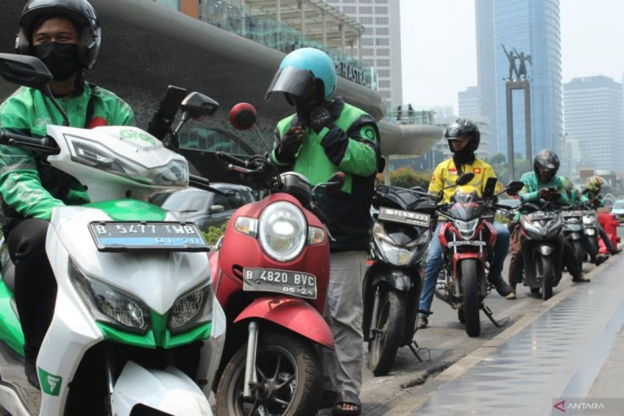
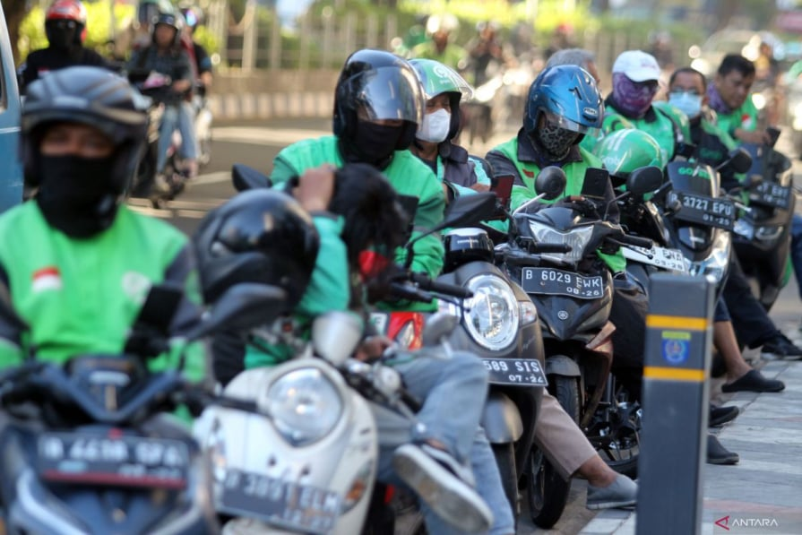
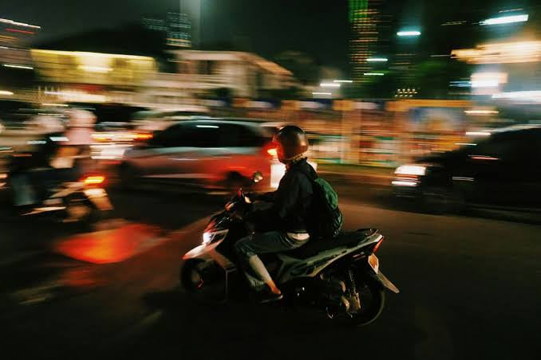

Offline Website BuilderMatthew W.S & Sebastiane R.G
Layar telepon pintar yang terpasang di stang sepeda motor itu terus berkedip di tengah remang subuh. Bagi Budi dan jutaan pengemudi serta kurir logistik di berbagai kota Indonesia, bunyi notifikasi di aplikasi bukan sekadar penanda masuknya pesanan baru. Bunyi pendek itu adalah pertaruhan harian antara dapur rumah yang tetap mengebul atau cicilan kendaraan yang mulai menunggak. Dalam satu dekade terakhir, kehadiran platform digital memang berhasil mengubah wajah mobilitas perkotaan secara drastis, menawarkan kepraktisan luar biasa bagi masyarakat yang makin sibuk.

Namun di balik kenyamanan layanan serba instan yang dinikmati konsumen, ada cerita yang jauh dari kata sederhana. Daya tarik utama dari pekerjaan platform ini pada mulanya adalah fleksibilitas waktu dan kemudahan akses masuk. Siapa saja yang memiliki kendaraan, SIM, dan ponsel pintar bisa langsung mencari nafkah tanpa perlu melewati kerumunan prosedur lamaran kerja yang rumit.
Sayangnya, fleksibilitas ini perlahan bergeser menjadi jebakan harian. Kasus nyata yang mencerminkan beban berat ini terdokumentasi dalam laporan berita Tempo.co, di mana Serikat Pekerja Angkutan Indonesia (SPAI) mengungkap bahwa para pengemudi harus berjuang menghadapi pemotongan komisi aplikasi yang membengkak hingga mencapai 20 sampai 30 persen per transaksi. Pemotongan yang melebihi batas ketentuan pemerintah ini secara langsung memangkas pendapatan bersih pekerja.

Akibat potongan komisi yang besar dan biaya operasional mandiri yang harus ditanggung sendiri seperti bahan bakar dan perawatan kendaraan, para pengemudi terpaksa melipatgandakan jam kerja mereka. Pengemudi terpaksa menghabiskan waktu 12 hingga 14 jam sehari di jalan raya hanya untuk memperoleh pendapatan yang layak. Fenomena ini menciptakan pertanyaan fundamental: sejauh mana fleksibilitas teknologi dapat dibenarkan apabila dalam praktiknya justru mengikis kesehatan fisik, kesejahteraan ekonomi, dan martabat kemanusiaan para pekerjanya?

Isu sentral yang dialami para pekerja platform digital terletak pada sistem kerja berbasis algoritma. Berbeda dengan tempat kerja konvensional yang memiliki penyelia atau manajer berwujud manusia, pekerja ekonomi gig dikendalikan oleh barisan kode dan sistem kecerdasan buatan. Algoritma ini memegang kendali penuh atas pembagian pesanan, penentuan rute, pemberian bonus insentif, hingga penilaian kinerja harian. Akibatnya, pekerja senantiasa berada dalam kondisi siaga karena keputusan vital yang memengaruhi penghasilan mereka diambil oleh sistem yang tertutup.
Secara hukum, hubungan antara perusahaan aplikasi dan pengemudi dikategori sebagai kemitraan, bukan hubungan kerja resmi. Konsekuensinya, pengemudi berada di luar cakupan Undang-Undang Ketenagakerjaan konvensional, sehingga tidak secara otomatis berhak atas upah minimum, jaminan kesehatan dari perusahaan, cuti berbayar, maupun Tunjangan Hari Raya.
Tingginya potongan tarif aplikasi secara sepihak memosisikan pekerja pada tingkat pendapatan yang sangat rapuh, memaksa mereka menambah jam kerja tanpa jaminan kompensasi yang sepadan.
Penonaktifan akun dapat terjadi secara tiba-tiba akibat algoritma sistem deteksi otomatis atau laporan subjektif pelanggan. Tanpa adanya proses pembuktian yang transparan maupun layanan tanggapan yang dikelola oleh manusia (human review), penonaktifan akun menjadi momok yang seketika memutus sumber mata pencaharian.
Pekerja platform berdiri sebagai individu mandiri tanpa wadah serikat resmi di dalam struktur perusahaan. Hal ini membuat mereka kesulitan bernegosiasi terkait pemotongan komisi, penetapan tarif per kilometer, atau perubahan kebijakan platform secara sepihak.
Tekanan beruntun dari jam kerja ekstrem, persaingan ketat di jalanan, serta rasa cemas akan ancaman penonaktifan akun menghasilkan dampak serius pada kesehatan mental pekerja. Ketidakmampuan untuk memprediksi pendapatan harian serta ketiadaan kontrol atas keputusan algoritma memicu kelelahan mental ekstrem dan kecemasan kronis. Rasa takut kehilangan mata pencaharian setiap kali membuka aplikasi menciptakan beban psikologis berkepanjangan yang tidak hanya merusak konsentrasi pengemudi, tetapi juga berpotensi memicu depresi.
Secara fisik, kelelahan akibat berkendara belasan jam sehari secara signifikan menurunkan kewaspadaan pengemudi di jalan raya, yang berujung pada peningkatan risiko kecelakaan lalu lintas. Di sisi lain, waktu yang habis di jalanan demi mencapai target pendapatan membuat interaksi dengan keluarga berkurang drastis, hingga memicu keretakan dalam ketahanan rumah tangga.
Meski demikian, untuk menilai isu ini secara objektif, kita juga perlu memahami sudut pandang dari sisi industri dan masyarakat luas:
Dari Sisi Perusahaan Platform
Model bisnis kemitraan dipandang sebagai sarana efisiensi operasional yang memungkinkan platform mengelola jutaan transaksi setiap hari secara efisien. Tanpa skema ini, biaya investasi dan operasional layanan akan melonjak tinggi, yang pada akhirnya dapat mengancam keberlanjutan bisnis di tengah persaingan pasar yang ketat.
Dari Sisi Konsumen
Masyarakat luas diuntungkan oleh kecepatan, keterjangkauan harga, serta kepraktisan layanan transportasi dan logistik digital dalam mendukung produktivitas sehari-hari.
Titik Temu
Inovasi teknologi dan efisiensi bisnis tentu tidak boleh dihentikan, tetapi penerapannya tidak boleh mengorbankan martabat serta keselamatan dasar kemanusiaan. Fleksibilitas dan keadilan harus dapat berjalan berdampingan melalui kerangka regulasi yang adaptif.
"Tiap-tiap warga negara berhak atas pekerjaan dan penghidupan yang layak bagi kemanusiaan."
Konstitusi menegaskan secara mendasar bahwa sebuah pekerjaan tidak sekadar dinilai dari nominal rupiah yang dibawa pulang ke rumah, melainkan dari standar kelayakan hidup yang menghormati martabat manusia. Fakta bahwa para pengemudi harus bekerja secara ekstrem hingga 12 sampai 14 jam sehari akibat tingginya pemotongan komisi aplikasi memperlihatkan adanya persoalan mendasar dalam pemenuhan kelayakan tersebut. Penghidupan yang diperoleh dengan mengorbankan waktu istirahat dan kesehatan fisik secara masif menandakan adanya kesenjangan yang nyata antara cita-cita konstitusi dan realitas di lapangan. Negara memiliki kewajiban regulatif untuk menetapkan batas perlindungan kerja, sementara perusahaan bertanggung jawab menyediakan skema imbalan yang adil dan tidak eksploitatif agar martabat pekerja tetap terjaga.
"Setiap orang berhak atas perlindungan diri pribadi, keluarga, kehormatan, martabat, dan harta benda yang di bawah kekuasaannya, serta berhak atas rasa aman dan perlindungan dari ancaman ketakutan untuk berbuat atau tidak berbuat sesuatu yang merupakan hak asasi."
Kondisi psikologis dan rasa aman pekerja tersentuh secara langsung oleh jaminan pasal ini. Lingkungan kerja berbasis algoritma sering kali memicu tekanan psikologis berat ketika ancaman penonaktifan akun (suspend) terjadi secara sepihak oleh sistem otomatis. Ketiadaan proses pembuktian yang transparan maupun peninjauan oleh manusia (human review) menciptakan iklim kerja yang diliputi kecemasan dan rasa tidak aman secara konstan. Ketakutan akan kehilangan mata pencaharian secara mendadak merupakan indikasi risiko nyata terhadap pemenuhan hak atas rasa aman pekerja, di mana perusahaan platform wajib menyediakan mekanisme penyelesaian keberatan yang adil dan pemerintah bertugas mengawasi agar tidak terjadi tindakan sewenang-wenang.
"Setiap orang berhak untuk bekerja serta mendapat imbalan dan perlakuan yang adil dan layak dalam hubungan kerja."
Ketentuan ini menekankan pentingnya keadilan dan kelayakan dalam ikatan hubungan kerja yang dijalani seseorang. Penggunaan label "kemitraan" saat ini sering kali memosisikan pekerja pada ketimpangan relasi kuasa yang tajam. Pekerja menanggung seluruh beban biaya operasional dan risiko keselamatan kerja di jalanan, namun di sisi lain tidak memiliki posisi tawar dalam penetapan tarif maupun pemotongan komisi. Kondisi ini menjadi pijakan penting bagi pembuat undang-undang untuk melakukan pembaruan kerangka hukum (regulatory reform) agar aturan ketenagakerjaan mampu menjangkau model kerja platform digital secara adil serta memberikan kepastian hukum bagi kedua belah pihak.
"Setiap orang berhak hidup sejahtera lahir dan batin, bertempat tinggal, dan mendapatkan lingkungan hidup yang baik dan sehat serta berhak memperoleh pelayanan kesehatan."
Pemenuhan kesejahteraan hidup warga negara dalam konstitusi mencakup dimensi lahiriah maupun batiniah. Kelelahan fisik kronis akibat jam kerja panjang, stres berlanjut, serta terbatasnya akses mandiri terhadap jaminan sosial formal berdampak langsung pada kesejahteraan lahir dan batin pekerja beserta keluarga yang bergantung pada mereka. Negara bertanggung jawab memperluas jaminan sosial universal agar dapat diakses dengan mudah oleh pekerja informal dan gig-workers, sementara perusahaan platform perlu berkolaborasi memfasilitasi perlindungan keselamatan dan kesehatan kerja bagi para mitranya.
Secara keseluruhan, pembedahan pasal-pasal konstitusi ini memperlihatkan bahwa krisis kerja di sektor gig-economy lebih tepat dikategorikan sebagai kesenjangan regulasi (regulatory gap) dan kerentanan perlindungan hak, ketimbang sekadar pelanggaran hukum pidana langsung oleh satu pihak. Pemerintah memiliki tanggung jawab konstitusional untuk hadir melengkapi kekosongan aturan ini melalui kebijakan publik yang adaptif, sehingga pertumbuhan pesat ekonomi digital di Indonesia dapat berjalan seiring dengan penghormatan terhadap hak asasi dan martabat manusia.
Pesatnya perkembangan ekonomi digital di Indonesia memang menghadirkan kemudahan mobilitas dan kepraktisan layanan bagi masyarakat, namun kenyamanan tersebut dibayar mahal oleh jutaan pekerja platform seperti pengemudi ojek online dan kurir logistik. Di balik fleksibilitas kerja yang ditawarkan, para pekerja ini justru terjebak dalam jebakan jam kerja ekstrem hingga 12 sampai 14 jam sehari akibat tingginya potongan komisi aplikasi yang membengkak serta ketidakpastian sistem pendapatan. Dikendalikan oleh sistem algoritma yang kaku dan tertutup, para pengemudi hidup dalam kecemasan konstan akibat ancaman penonaktifan akun (suspend) sepihak tanpa mekanisme peninjauan oleh manusia (human review) yang adil. Ketimpangan relasi kuasa ini kian diperparah oleh status "kemitraan semu" yang menempatkan mereka di luar perlindungan Undang-Undang Ketenagakerjaan formal, sehingga hak-hak dasar seperti upah minimum, jaminan kesehatan, dan kepastian kerja menjadi sangat rapuh.
Dampak dari tekanan kerja berbasis algoritma ini tidak lagi sekadar urusan dompet, melainkan telah menjelma menjadi krisis kemanusiaan yang menyentuh kesehatan mental dan keselamatan jiwa. Kelelahan fisik kronis, rasa cemas berkepanjangan akan kehilangan mata pencaharian, serta berkurangnya waktu bersama keluarga menciptakan beban psikologis berat yang mengikis kualitas hidup para pekerja. Ditinjau dari sudut pandang tata negara, kondisi ini mencerminkan adanya kesenjangan regulasi (regulatory gap) dalam pemenuhan hak-hak konstitusional yang dijamin oleh UUD 1945. Hak atas pekerjaan dan penghidupan yang layak bagi kemanusiaan (Pasal 27 ayat 2), hak atas rasa aman dari ancaman ketakutan (Pasal 28G ayat 1), serta hak atas perlakuan yang adil dalam hubungan kerja (Pasal 28D ayat 2) menunjukkan bahwa negara memiliki kewajiban moral dan hukum untuk hadir melengkapi kekosongan aturan agar pertumbuhan ekonomi digital tidak mengorbankan martabat warga negaranya.
Untuk meretas permasalahan kompleks ini, dibutuhkan sinergi nyata melalui pendekatan solusi tiga pilar yang saling melengkapi. Pemerintah selaku regulator perlu memperbarui aturan hukum ketenagakerjaan digital yang menjamin batas komisi adil, pembatasan jam kerja aman, serta akses jaminan sosial universal (BPJS). Di sisi lain, perusahaan platform bertindak membenahi transparansi algoritma, menyediakan saluran banding berbasis manusia, dan menyediakan fasilitas perlindungan kesehatan mental bagi para mitranya. Sementara itu, masyarakat pengguna jasa memegang peran vital melalui pembentukan etika konsumen yang berempati, memahami beban kerja para pengemudi, serta menggunakan sistem ulasan bintang secara bijak. Pada akhirnya, kemajuan teknologi digital di Indonesia seharusnya tidak diukur dari seberapa cepat pesanan tiba di pintu rumah kita, melainkan dari seberapa adil dan sejahtera kita memperlakukan manusia-manusia yang mengantarkannya.
Krisis kesehatan mental dan kerentanan kerja pada pekerja ekonomi gig bukanlah sekadar dampak sampingan yang wajar dari kemajuan teknologi, melainkan cermin dari kesenjangan sosial yang memerlukan perhatian bersama. Mengabaikan kondisi pekerja platform sama saja dengan membiarkan terjadinya pengingkaran terhadap nilai Kemanusiaan yang Adil dan Beradab sebagaimana diamanatkan dalam Pancasila. Kemajuan ekonomi digital Indonesia seharusnya tidak dibangun di atas kelelahan dan rasa cemas para pekerjanya, melainkan di atas fondasi perlindungan hukum yang adil, kesetaraan martabat, serta kesejahteraan bagi seluruh warga negara.
Mari jadi bagian dari perubahan untuk ekosistem digital yang lebih adil dan humanis! Saat menggunakan layanan transportasi atau pengiriman digital berikutnya, ingatlah bahwa di balik stang motor tersebut ada seorang manusia yang sedang berjuang demi keluarganya. Mulailah dari tindakan kecil namun berdampak besar: berikan ulasan bintang dengan bijak dan objektif, sapalah mereka dengan ramah, luangkan sedikit kesabaran saat terjadi kendala lalu lintas yang di luar kendali mereka, dan berikan apresiasi terbaik yang Anda mampu. Mari kita suarakan perlindungan hak-hak pekerja gig-economy agar kemajuan teknologi di Indonesia tidak hanya canggih secara sistem, tetapi juga menjunjung tinggi nilai Kemanusiaan yang Adil dan Beradab.
Offline Website Builder